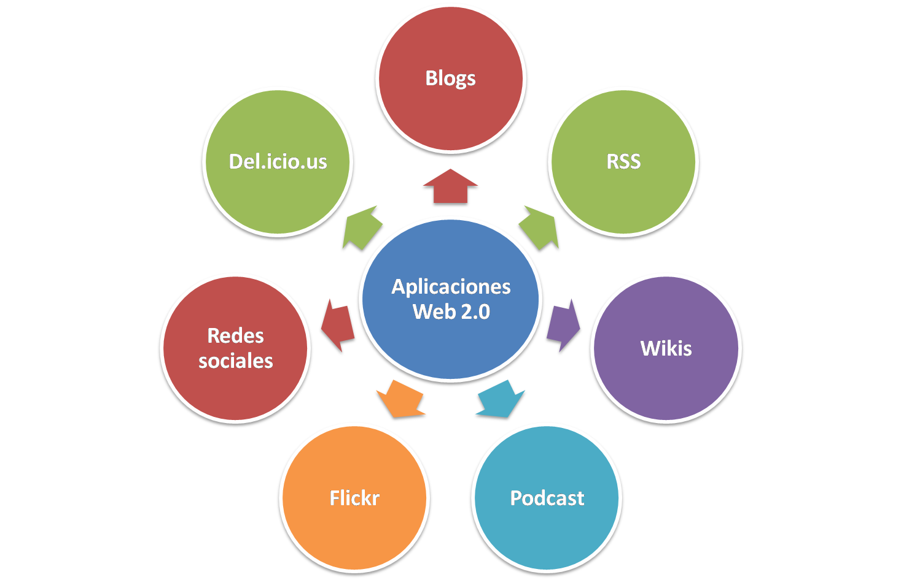

Webbens Historia
Internet har en fascinerande historia som sträcker sig över flera decennier.
Första stegen
Internet skapades av det amerikanska försvaret på 1960-talet som ett decentraliserat nätverk som skulle vara motståndskraftigt mot krigsskador.
Den första noden av ARPANET, det tidiga internet, skapades 1969.
På 1970-talet utvecklades TCP/IP-protokollet, som fortfarande används för att möjliggöra kommunikation över internet.
|
|
|
|
Födelsen av World Wide Web
1989 skapade Tim Berners-Lee det första webbprogramvaruprojektet vid CERN.
1993 lanserades den första webbläsaren, Mosaic.
1995 grundades Amazon och eBay som tidiga e-handelswebbplatser.
Webben utvecklades snabbt till en plats för informationssökning och kommersiella syften.
|
E-handel och sociala medier:
Under 2000-talet blomstrade e-handel med framväxten av företag som Amazon, och sociala medierplattformar som Facebook och Twitter blev populära.
Webb 2.0-konceptet, med användardriven webb och interaktivitet, tog över.
|

|
|
|
Mobil revolution och framtid:
Mobil användning av webben ökade dramatiskt med lanseringen av smartphones.
I dag har vi webben överallt, från smarta kylskåp till bilar och kläder.
|